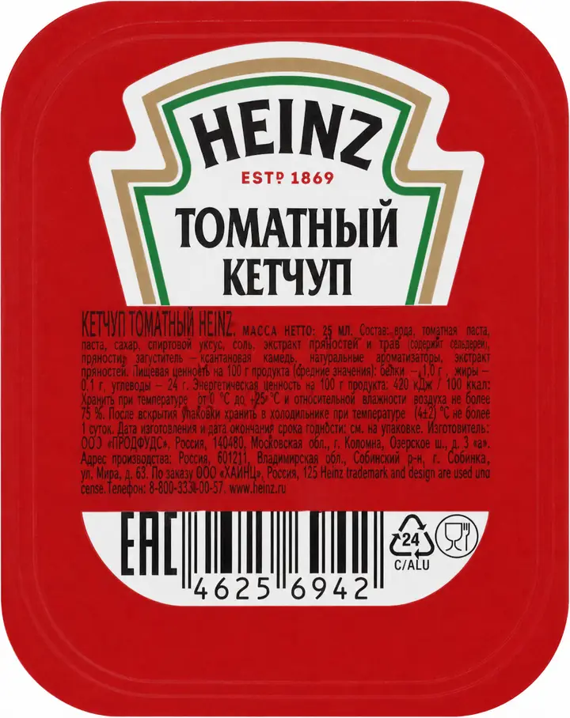
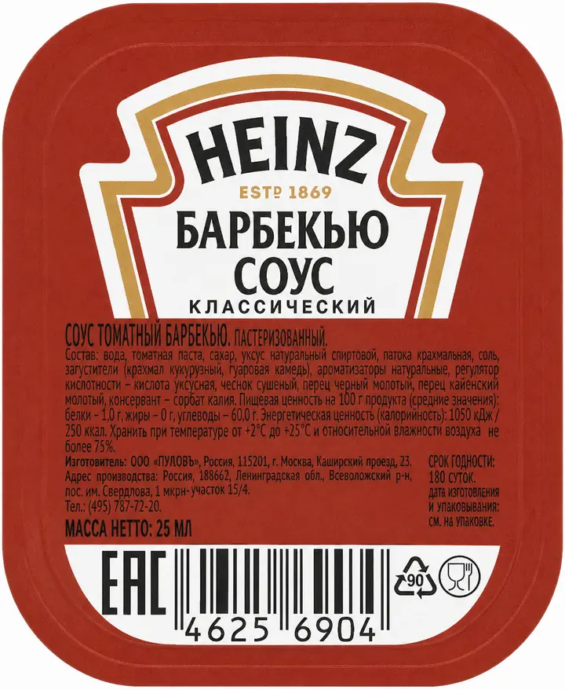

Что тебя ждёт
Они откроются, когда сдашь экзамен в модуле 4 на «золото». Прогресс сохраняется — можно закрыть и вернуться позже.
Поставь себя на место гостя
Сейчас ты будешь не сотрудником, а гостем. Закажи себе то, что реально любишь — а мы посмотрим, что получится.
Что берёшь?
Выбери 3 соуса, которые идеально подходят к твоему блюду. По твоему вкусу — правильного ответа нет. Выбрано: 0 из 3
Теперь выбери 2 соуса, которые испортят это блюдо. Выбрано: 0 из 2
Ты приехал домой. Красивая коробка, внутри — то, чего ты ждал весь день. Открывай.
Нажми на ту эмоцию, которую испытал бы в этой ситуации.
Ты голодный, после тяжёлого рабочего дня, хотел порадовать себя любимой закуской с вкусным соусом. А получил то, что получил…
Именно это чувство ежедневно испытывают твои гости, когда ты ошибаешься. Хочешь это исправить? Тогда поехали дальше!
Цифры
Давай вместе посмотрим, как проходит твоя смена.
А теперь представь: ты берёшь соус, не глядя, просто по цвету. И в 1 случае из 50 ты ошибаешься. Сколько это получается?
| 800 упаковок ÷ 50 | 16 ошибок в день |
| 16 ошибок × 30 смен | 480 ошибок в месяц |
Просто потому, что кто-то не прочитал название на этикетке.
Если гость не получает любимый соус, он ставит оценку на 1, а то и 2–3 балла ниже. Только 1 балл репутации = минус 15% повторных визитов.
Они очень похожи между собой. Мы уже работаем над этим, и совсем скоро отличать соусы друг от друга станет удобнее. А пока — давай научимся работать с соусами без потерь.
Секрет этикетки
Вот две этикетки крупным планом. Чем они отличаются визуально?


Красно-коричневый фон — и там, и там
Цвет одинаковый — и именно он вводит тебя в заблуждение. А вот названия совершенно разные. На чтение одного слова уходит полсекунды. Это быстрее, чем ты моргаешь. Ты успеешь прочитать даже в пиковую нагрузку.
Все 15 соусов на одном экране. Нажми на любой — этикетка увеличится, а название выделится жирным. На компьютере хватит навести курсор.
Время пошло. Нажми на него в карте выше.
Тренажёр
Слева — заказ гостя. Наверху — стеллаж: в корзинках видны только цветные уголки этикеток, как в жизни. Внизу — пакет.
5 — положил верный соус, прочитав его этикетку крупным планом.
1 — положил верный соус, не читая (просто повезло по цвету).
0 — ошибка.
+3 — поймал подмену: уголок корзинки был «твой», а внутри лежал
другой соус — и ты заметил это, прочитав этикетку.
+1 — за каждые 5 верных заказов подряд.
Заглядывать в корзинки можно сколько нужно — это бесплатно. Баллы зависят только от того, прочитал ли ты этикетку того соуса, который в итоге положил в пакет.
Режимы
Работа в пик
Чтобы никогда не ошибаться с соусом, запомни простой алгоритм. Он работает даже когда очередь до двери.
Взял упаковку со стеллажа
Одно касание. Пока ничего не решаешь.
Повернул её к себе этикеткой
Так, чтобы было видно текст, а не только цвет.
Прочитал название про себя
Убедился, что это «Барбекю», а не «Кетчуп».
Сделай это привычкой за 5 смен — и будешь делать на автомате, даже в самой большой спешке.
Что ты скажешь себе в следующий пик, когда рука сама потянется за соусом по цвету? Ответ увидит наставник в сводке.
Финальный тест
Механика экзамена, 5 заказов. Система сравнит этот результат с твоим первым проходом режима 2 — и покажет, насколько ты вырос.
Что изменится в твоей работе с завтрашней смены?
Поздравляем!
Прочитать этикетку соуса — это 0,5 секунды твоего времени и сотни довольных гостей, которые будут тебе благодарны и вернутся к нам ещё. Спасибо, что ты с нами!
Кнопка передаёт в LMS статус «Пройден».